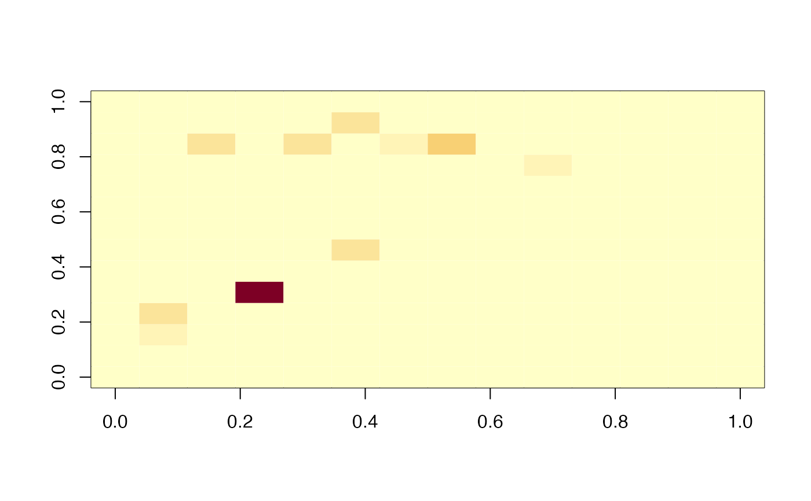

expand rate matrix for testing status
testify(ratemat, params, debug = FALSE, testing_time = NULL)
| ratemat | original rate matrix |
|---|---|
| params | parameters |
| debug | what it sounds like |
| testing_time | "report" (N and P are counted at the time when individuals move from _n, _p to _u, _t compartments) or "sample" (N and P are counted when individuals move from _u to _n or _p) |
params <- read_params("PHAC_testify.csv") state <- make_state(params[["N"]],E0=params[["E0"]]) M <- make_ratemat(state,params) image(M)